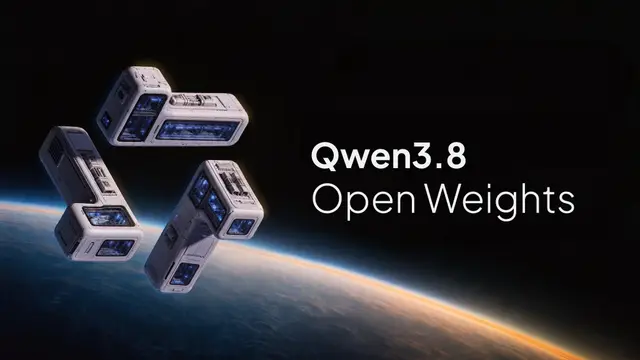

#qwen
Qwen3.8-27Bがオープンウェイト化、27Bでマルチモーダルと262K文脈に対応

AlibabaのQwenチームは、Qwen3.8シリーズの「Qwen3.8-27B」のオープンウェイトを公開しました。27Bパラメータの比較的コンパクトなDenseモデルながら、ネイティブなマルチモーダル処理、長大なコンテキスト、コーディングやオフィス業務への適性を前面に押し出しています。すでに公開された大規模モデル「Qwen3.8-2.4T-A95B」と合わせ、ローカル用途から大規模AIエージェントまでをカバーする構成です。
記事で取り上げている点
- 27BのDenseモデルでマルチモーダルに対応
- 262Kコンテキスト、YaRNで最大1Mへ
- Max級の2.4Tモデルもオープンウェイト化
- Apache 2.0が開発者にもたらす意味
- 結論
一次情報（出典） twitter.com